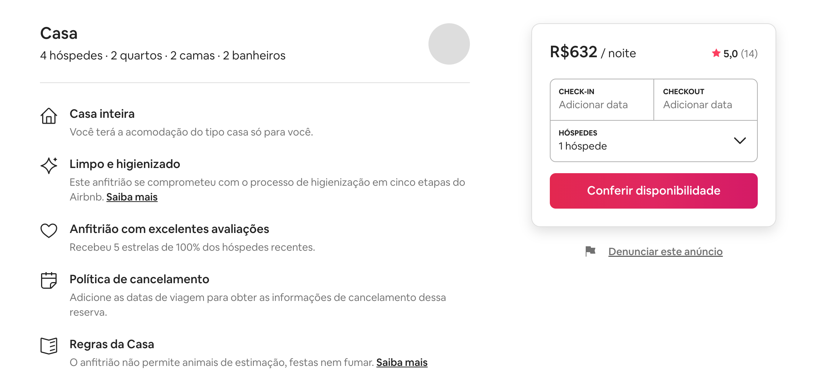
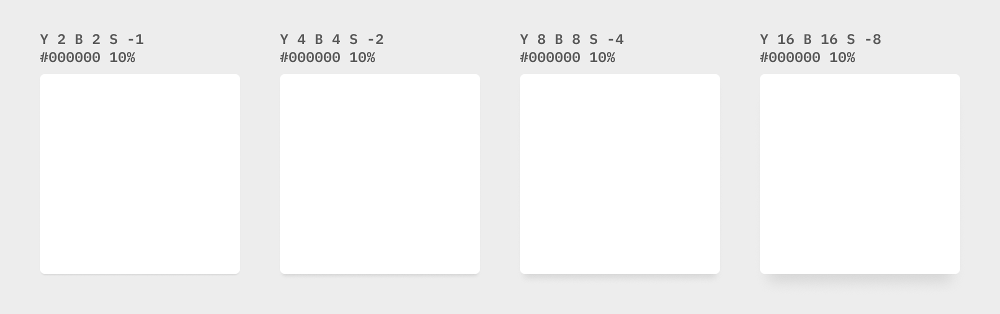
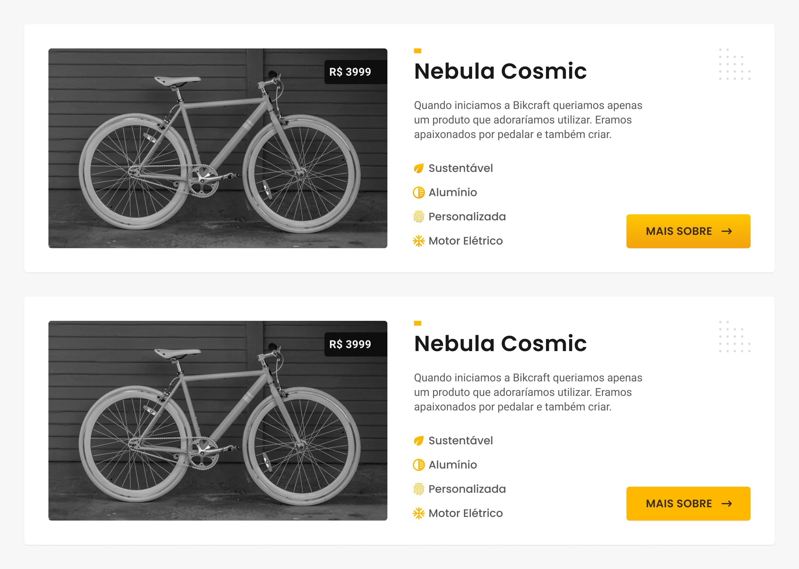
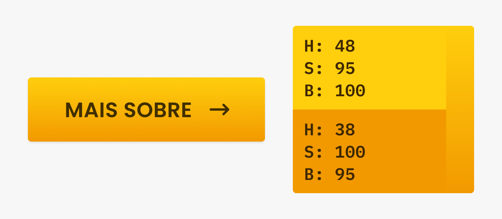
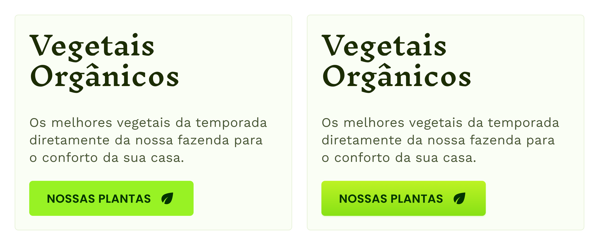
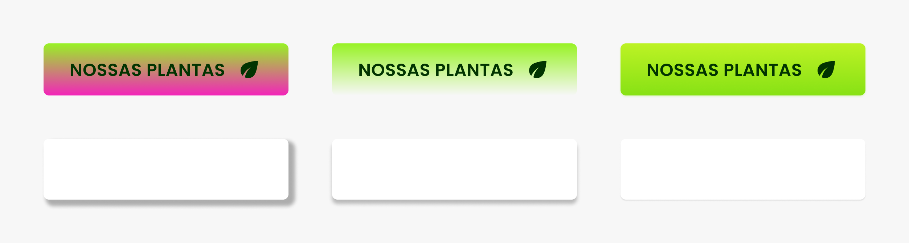

UI Design
Luz e Sombra
Luz e Sombra
Profundidade
Luz e sombra servem para recriarmos a percepção de profundidade que enxergamos no mundo.
Contraste
A profundidade é mais uma técnica para criação de contraste entre os elementos.
No Airbnb a sombra é utilizada para destacar a principal parte do site.

No Instagram a sombra é utilizada para separar o conteúdo do seu contexto.
Sombra
A sombra depende da direção da luz e do objeto.

Elevação
Diferentes configurações da sombra criam a ilusão de diferentes elevações na tela.

Google Material
O estilo visual definido pelo Google para o uso em seus sistemas de design, fez um estudo profundo sobre o uso de elevações em interfaces: https://material.io/design/environment/elevation.html
Gradiente
O gradiente deve ser sutil e seguir as mesmas regras das variações de cores. Geralmente a cor mais clara vem de cima para baixo, assim como a luz.


O gradiente pode dar vida aos elementos da interface.

Sutileza
Sutil
Seja sutil no uso de sombras e gradientes, não utilize sombras fortes ou gradientes que não seguem a regra de transição de cores. Siga a luz que geralmente vem de cima (claro para escuro).
Evite
Evite variar para cores não análogas (análogas são cores próximas no slide da matiz) ou para a mesma cor mudando apenas a sua opacidade.
